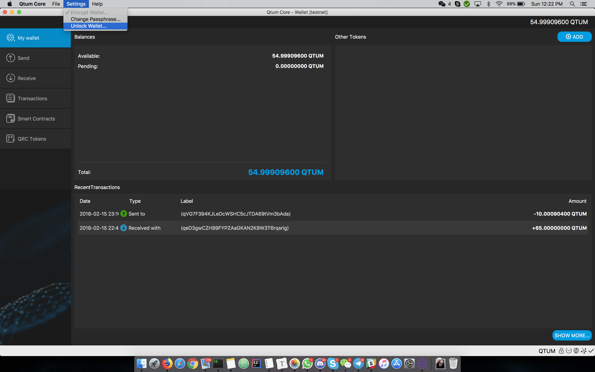
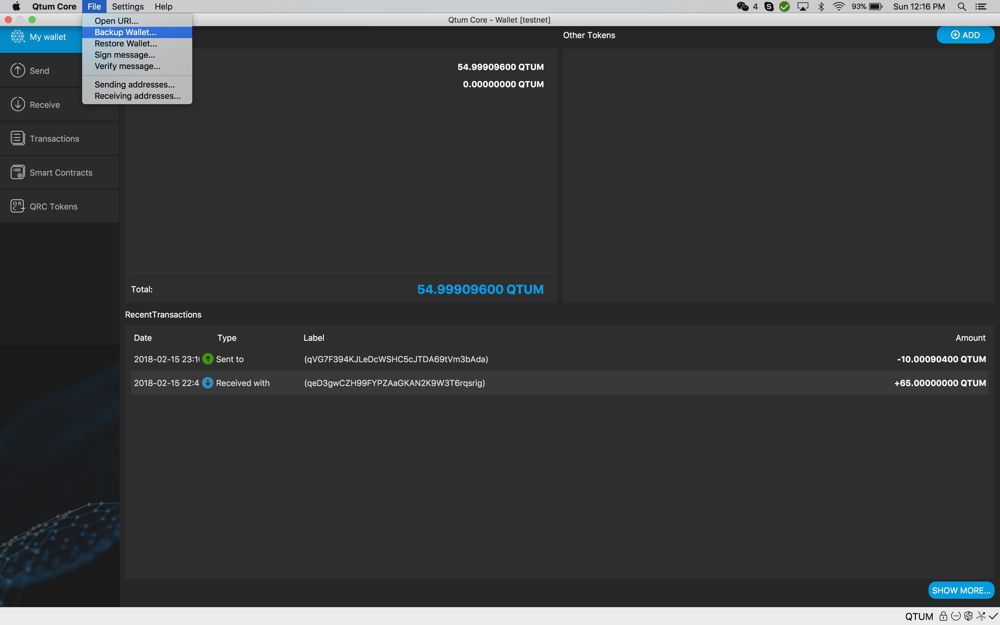

QTUM Wallet Best Practices
In this document we'll take a look at how to safely use our QTUM wallet. Please keep in mind these VERY IMPORTANT topics:
- Encrypt your wallet BEFORE backing up
- Make several backups of your password, preferably, make paper backups of your password.
- Double check, no, Triple check your password to make sure you wrote it down correctly. Without your password, no one will be able to access your wallet.
- Once you've backed up and tested your password, make a backup of your wallet.
- Try to keep several copies of your backup in safe locations only, do not use public online services for this, do not trust 3rd party services with your holdings.
Let's review how to:
- Encrypt
- Backup wallet
- Restore
Wallet Encryption
First, let’s encrypt this wallet before making the backup, this will allow the backup to be encrypted as well. Go to settings -> Encrypt wallet.

Next, let’s enter the password for this wallet, please remember this password because without it you’ll lose access to your Qtum.
After the password is entered and accepted, the wallet will restart and it'll be encrypted. AGAIN, do not forget or lose your password, without it, you will never be able to gain access to your QTUM.
Wallet Backup
It's recommended to make the backup after encrypting the wallet.

To access the backup option, we go into File/Backup Wallet and then we enter route and name.
After the backup’s name is entered and we’ve verified the route where the wallet is being saved to, we can click on save. Now we’ve successfully backed up our wallet.
Restore wallet backup
Recent versions of the QTUM wallet have implemented backup management from the UI. It's a breeze to backup and restore your QTUM wallet!
Go to File -> Restore wallet, this will open a dialog which will allow us to restore directly from the Qtum-core QT wallet!
Here we selected the wallet backup with the reindex option selected (salvagewallet can also be used if necessary).